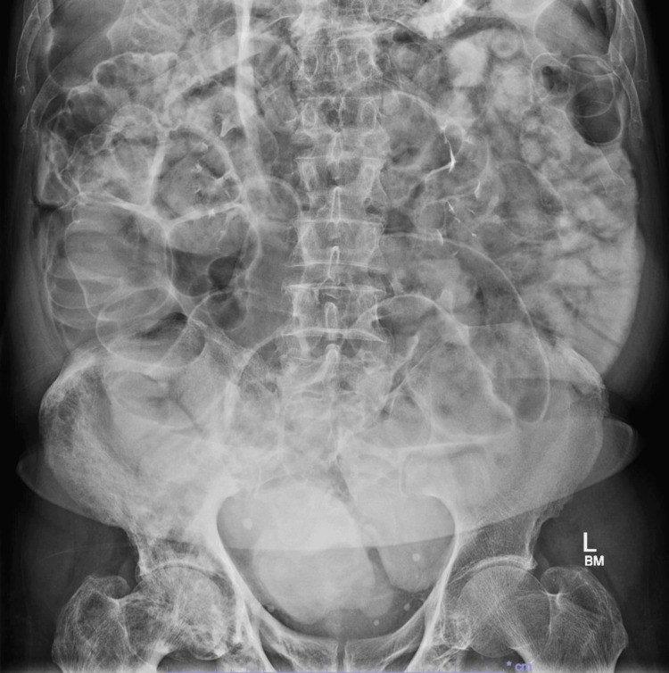
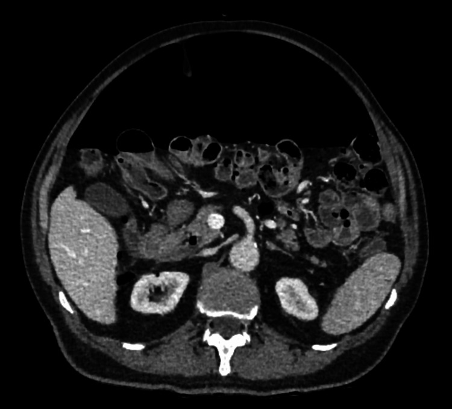

115 — Khí tự do ổ bụng: Rigler, bóng đá & giả khí / Pneumoperitoneum
Tags: pattern:khi-tu-do vung:bung
Mức chắc chắn (certainty): tổng hợp y văn (literature synthesis) — nhóm tự biên từ y văn mở, chưa gắn ca nguyên văn đơn lẻ.
1. Tổng quan — 90% thủng tạng rỗng + 10% lành tính
- Khí tự do = thủng tạNG rỗng đến khi chứng minh ngược lại (loét, túi thừa, u, sau nội soi). TẠI SAO X-quang đứng thấy: khí lên vòm hoành; nằm ngửa tìm Rigler (2 thành ruột cùng hiện) + bóng đá (football) + dây chằng liềm.
- Lành tính (không mổ): sau mổ/nội soi, Chilaiditi (đại tràng kẹt gan-hoành có haustra), thông khí áp lực, đường sinh dục nữ.
- Ngưỡng CT: khí < 5 mm đã thấy; thuốc uống thoát ra ngoài = thủng chắc chắn.
2. Gamut khí tự do theo bối cảnh
- Đau bụng dữ + viêm phúc mạc: thủng (loét/túi thừa/u) — mổ cấp cứu.
- Sau mổ/nội soi + ổn định: tồn dư — theo dõi, đừng mổ lại vội.
- Không đau + ổn định + 2,2 lít khí: lành tính/vô căn (ca dưới) — kháng sinh + nhịn ăn + theo dõi.
- Chilaiditi: haustra đại tràng + không Rigler — đừng gọi khí tự do.
3. Bảng dấu hiệu
| Dấu hiệu | Phim | Chốt |
|---|---|---|
| Rigler/double-wall (2 thành ruột) | X-quang nằm | 2 thành cùng hiện = khí 2 bên thành |
| Bóng đá + dây chằng liềm | X-quang nằm (khí nhiều) | Khí lượng lớn |
| Vòm hoành (đứng/nghiêng) | X-quang đứng | Nhạy nhất X-quang |
| Thuốc uống thoát | CT | Thủng chắc chắn, định vị điểm vỡ |
| Chilaiditi | CT/X-quang | Haustra + không Rigler = giả khí |

Dấu Rigler. Nguồn: Liu et al., Cureus 2026 Fig. 2, CC BY 4.0.
Khí tự do lượng lớn, không thủng (lành tính). Nguồn: Liu et al., Fig. 1, CC BY 4.0.4. Protocol
- X-quang đứng/nghiêng đầu tay (vòm hoành); nằm ngửa tìm Rigler/bóng đá.
- CT + thuốc uống: khí + thoát thuốc + dày thành + dịch khu trú = điểm vỡ.
- Ổn định + không viêm phúc mạc + không thoát thuốc → bảo tồn có kiểm soát.
5. Cạm bẫy
- Chilaiditi mổ oan — haustra + lâm sàng êm là chốt.
- Khí sau mổ tồn tại 1–2 tuần — hỏi mổ gần đây trước khi kết luận thủng.
- Nằm ngửa bỏ sót khí ít — nghi ngờ cao thì CT (nhạy hơn X-quang nhiều).
6. Tự lượng giá — Blind Quiz
Ca 1 — Không đau + ổn định + X-quang 2 thành ruột. Gọi tên dấu + xử trí?
Bấm để hiện đáp án
- Rigler/double-wall: khí tự do nhưng lâm sàng êm + CT không thoát thuốc (đối chiếu dưới) → lành tính, bảo tồn (2,2 lít khí vẫn khỏi không mổ).
- Nguồn: Liu et al., Fig. 1–2, CC BY 4.0.
Ca 2 — Đau dữ + co cứng + khí + thoát thuốc + dày thành sigma: chẩn đoán + xử trí? (Bảng mục 3.)
Bấm để hiện đáp án
- Thủng túi thừa: mổ cấp cứu (khác khí lành tính lâm sàng êm).
Bài liên quan chéo
- 100 – Tổng quan hệ Bụng
- 110 – Giải phẫu bụng (Chilaiditi)
- 160 – Bụng cấp GI (thủng túi thừa)
Không dùng để chẩn đoán độc lập khi chưa có người hướng dẫn.